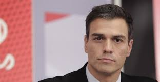

ÚLTIMA HORA
Un terremoto de magnitud 6,3 deja al menos 26 heridos leves en Melilla y obliga a suspender las clases

Un terremoto de magnitud 6.3 en la escala de Richter con epicentro en el Mar de Alborán se ha dejado notar esta madrugada en Melilla y varias provincias andaluzas, especialmente en Málaga y Granada. El seísmo se ha producido a las 5.22 horas y ha sacado literalmente de sus camas a cientos de melillenses, que han salido sobresaltados en pijama a la calle.
Política
Sánchez asegura que no será presidente “a cualquier precio”
El secretario general del PSOE, Pedro Sánchez, mantiene y respeta todos los términos aprobados por el Comité Federal de su partido, celebrado el pasado 28 de diciembre, que le impide negociar con partidos que defiendan la independencia y el derecho de autodeterminación. Así quedan excluidos los partidos que abogan por la independencia como ERC y Democràcia i Llibertat. Así lo ha ratificado este lunes la Comisión Permanente de la Ejecutiva Federal, que mantiene la reunión para el próximo sábado del comité federal, en el que se fijará una fecha para el congreso del partido.
Podemos consultará en referéndum a sus bases cualquier pacto con el PSOE

El líder de Podemos, Pablo Iglesias, ha asegurado este lunes que si alcanza un pacto de Gobierno con el secretario general del PSOE, Pedro Sánchez, y con el candidato de IU, Alberto Garzón, el partido consultará a sus simpatizantes. “En el momento en que haya un acuerdo de Gobierno, se someterá a consulta con los inscritos de Podemos”, ha señalado en la SER. Se trata de un procedimiento que establecen los estatutos de la formación y al que ya recurrieron los líderes territoriales en Castilla-La Mancha y en Extremadura tras las autonómicas del pasado 24 de mayo para avalar los pactos suscritos con los presidentes socialistas Emiliano García-Page y Guillermo Fernández Vara, respectivamente.
Deportes
Pau Gasol fuera de los All-Stars

No ha podido ser. Pau Gasol finalmente no será titular en el equipo del Este en el All Star de la NBA que se jugará el 14 de febrero en el Air Canada Centre de Toronto. El español ha quedado en 6ª posición en la categoría de 'fordward' (hombres de posiciones interiores) a tan solo 360 votos de Carmelo Anthony.
Ferrer tumba al gigante Isner y se acostumbra a los cuartos

David Ferrer volvió a demostrar en el Abierto de Australia una fiabilidad a prueba de cañonazos. El gigante estadounidense John Isner cedió en dos horas y tres minutos ante el español por 6-4, 6-4 y 7-5, y el alicantino se clasificó para los cuartos de final del primer Grand Slam del curso por quinta vez en seis años.